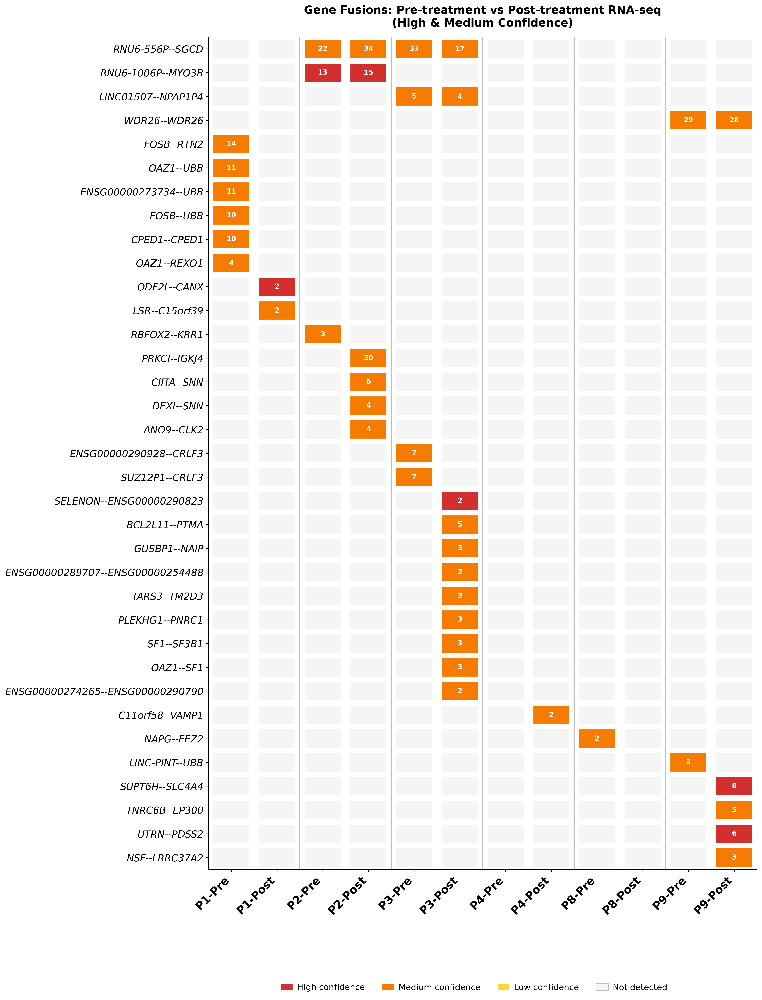
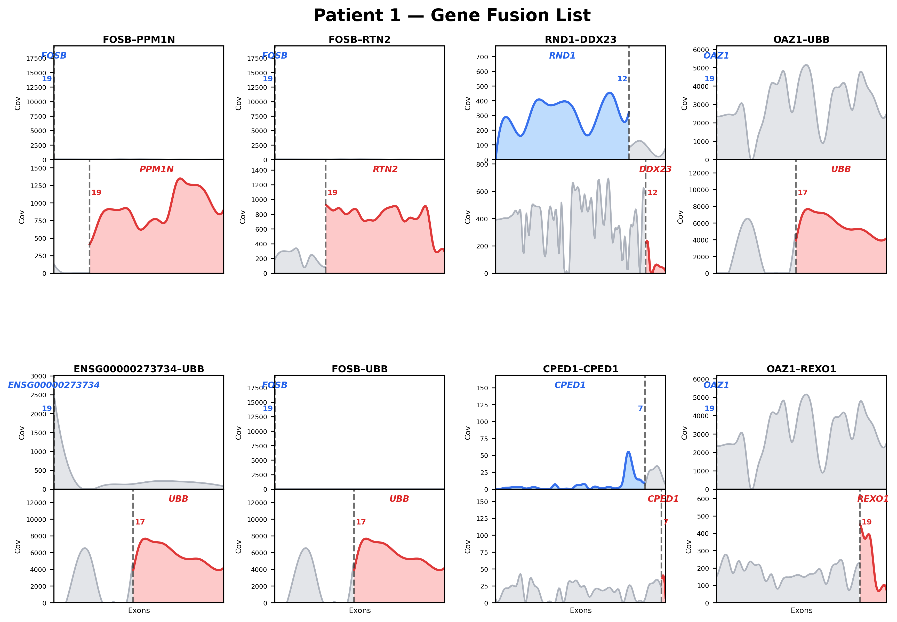
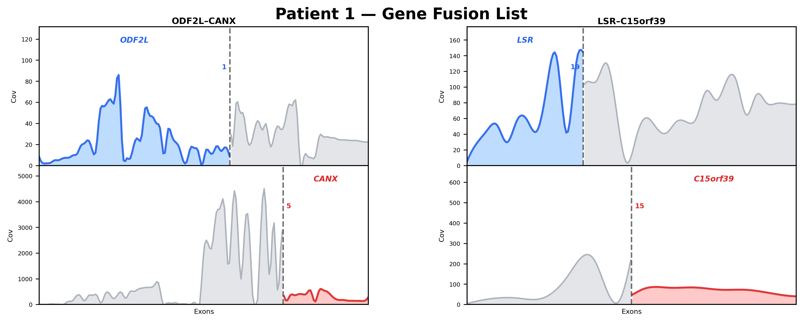
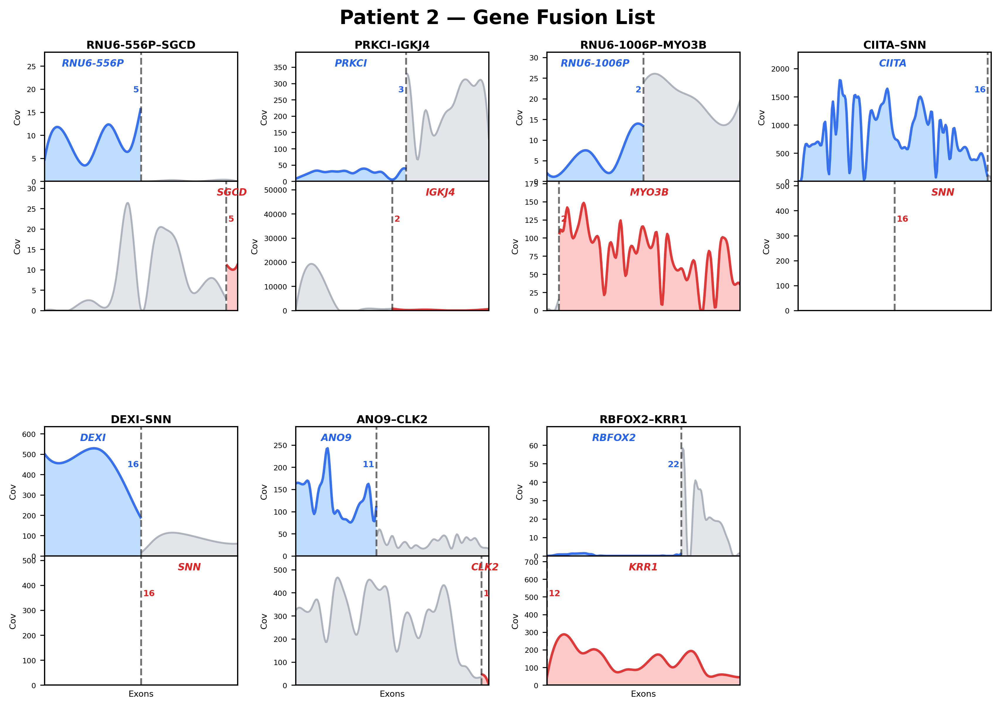
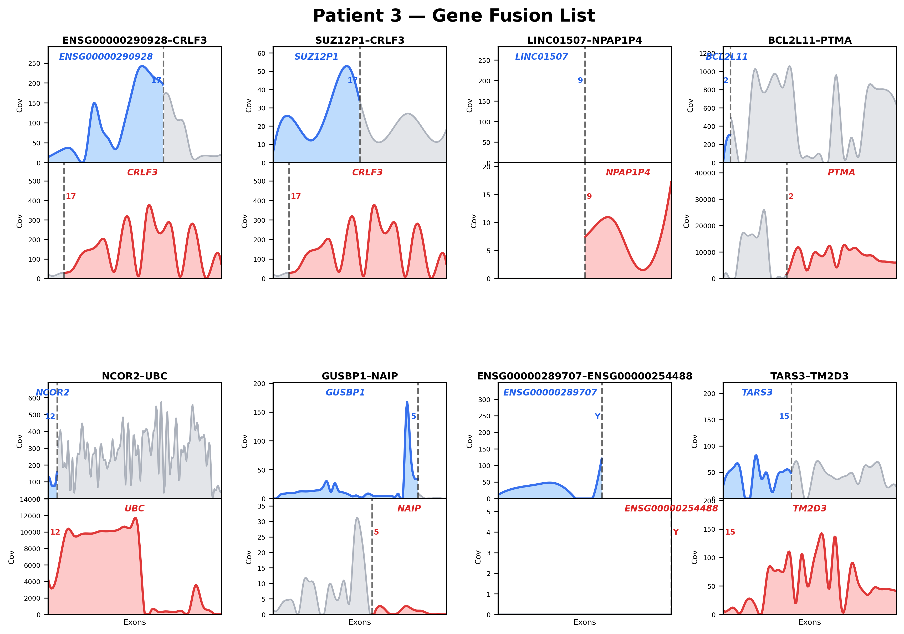
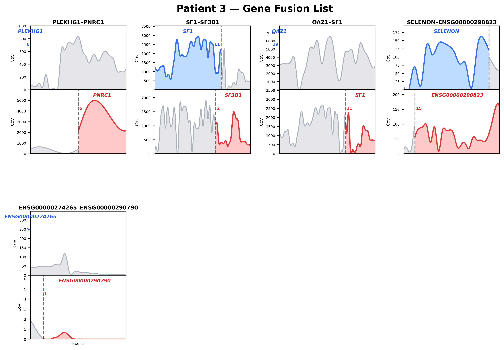
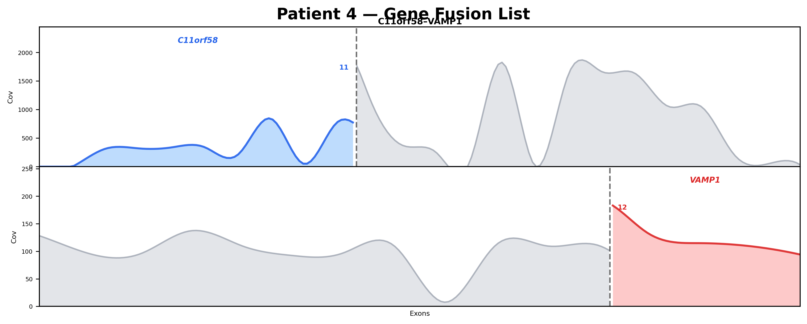
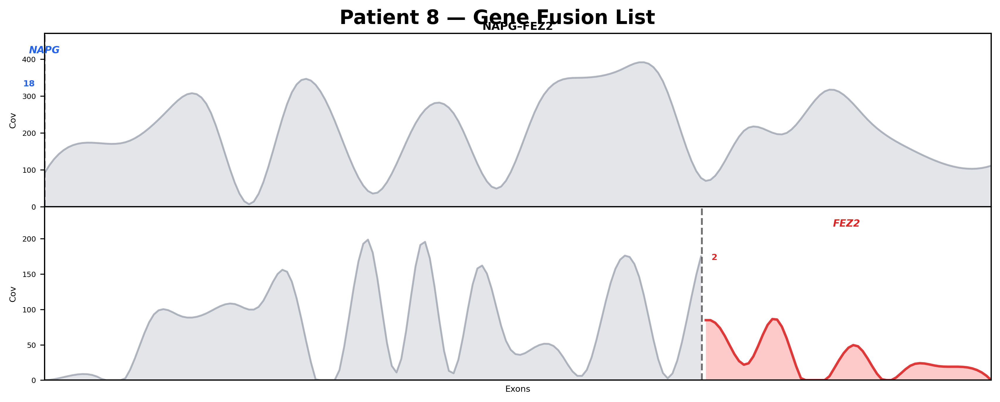
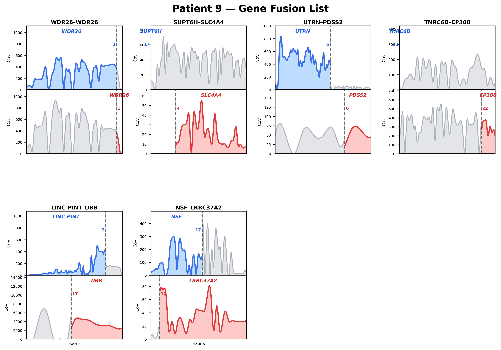

AI-assisted bulk RNA-seq analysis reveals fusion landscape remodeling following personalized neoantigen vaccination in lymphoplasmacytic lymphoma/Waldenström macroglobulinemia
Complete pipeline from RNA-seq BAMs to the final fusion heatmap — identifying novel gene fusions and tracking treatment-induced changes in LPL/WM patients
Abstract
Lymphoplasmacytic lymphoma/Waldenström macroglobulinemia (LPL/WM) is a molecularly heterogeneous B-cell malignancy, but how immunotherapy influences fusion transcript dynamics remains unknown. Here, we used an AI-assisted bulk RNA-seq workflow to characterize fusion landscape remodeling in paired pre- and post-vaccination bone marrow samples from six patients with LPL/WM following personalized neoantigen vaccination. The workflow integrated chimeric re-alignment, Arriba-based fusion detection, confidence filtering, longitudinal comparison and downstream visualization in a reproducible analytical framework.
Fusion analysis revealed marked inter-patient heterogeneity and dynamic post-treatment remodeling, with post-treatment fusion events outnumbering those detected only before treatment. Several candidate post-treatment fusions involved genes linked to B-cell signalling, apoptosis, RNA splicing, chromatin regulation and antigen presentation, suggesting possible associations with clonal selection, transcriptomic adaptation and immune evasion. Cohort-level heatmaps and exon-level coverage analyses supported the robustness of these events and revealed distinct patient-specific trajectories of fusion evolution.
These findings identify treatment-associated fusion landscape remodeling in LPL/WM and illustrate the practical value of AI-assisted bioinformatics for translational genomics. More broadly, this study provides proof of concept that AI-guided analytical workflows can enable non-specialist investigators to perform reproducible and clinically informative transcriptomic analyses.
Pipeline Overview
Pre-requisite
RNA-seq BAMs
STAR Chimeric
Re-alignment
Arriba Fusion
Calling
Confidence
Filtering
Pre vs Post
Comparison
Figure 3i
Heatmap
Pre-requisite: RNA-seq BAM Files
Gene fusion calling requires aligned RNA-seq BAMs. These were generated in the WES + RNA-seq integration pipeline using STAR 2-pass alignment.
12 Input BAMs (6 patients × Pre/Post)
- Patient 1: COHP_68593 (Pre), COHP_68594 (Post)
- Patient 2: COHP_68563 (Pre), COHP_68564 (Post)
- Patient 3: COHP_68566 (Pre), COHP_68567 (Post)
- Patient 4: COHP_68569 (Pre), COHP_68570 (Post)
- Patient 8: COHP_68596 (Pre), COHP_68597 (Post)
- Patient 9: COHP_68572 (Pre), COHP_68573 (Post)
Location: Modal volume output-result at /results/WES_BulKrna Intergrate/_rnaseq/{COHP_ID}/rna.sorted.bam
STAR Chimeric Re-alignment
Arriba requires chimeric read information that wasn't in the original STAR alignment. Each BAM is converted back to FASTQ, then re-aligned with chimeric junction output enabled.
Key Chimeric Parameters
--chimSegmentMin 10— minimum length of chimeric segment--chimOutType WithinBAM HardClip— embed chimeric reads in BAM (required by Arriba)--chimScoreSeparation 1— allow closely scoring chimeric alignments--chimMultimapNmax 50— allow multi-mapped chimeric reads
Resources: 16 CPU, 64 GB RAM, ~50–80 min per sample
Arriba Gene Fusion Calling
Arriba detects gene fusions from chimeric reads in the STAR BAM output. It uses a blacklist to filter known artifacts and a database of known fusions for confidence scoring.
Arriba Databases
- Blacklist: Known artifacts, read-through events, pseudogenes (hg38 v2.4.0)
- Known fusions: Curated database of validated oncogenic fusions
- Protein domains: Domain annotations for functional impact assessment
Arriba Output Fields
#gene1,gene2— fusion partner gene namesbreakpoint1,breakpoint2— genomic coordinatessplit_reads1,split_reads2— junction readsdiscordant_mates— spanning readsconfidence— high / medium / lowreading_frame— in-frame / out-of-frame / stop-codontype— translocation / deletion / duplication / inversion
Execution: 12 samples processed in batches of 4 on Modal (16 CPU, 64 GB RAM each)
Raw Fusion Calling Results
| Patient | Pre Fusions | Post Fusions | Change | Response |
|---|---|---|---|---|
| Patient 1 | 31 | 13 | ↓ 18 | SD |
| Patient 2 | 15 | 16 | ↑ 1 | SD |
| Patient 3 | 21 | 29 | ↑ 8 | SD |
| Patient 4 | 14 | 4 | ↓ 10 | SD |
| Patient 8 | 12 | 4 | ↓ 8 | SD |
| Patient 9 | 11 | 11 | — 0 | PD |
Total: 140 unique fusion events across all 12 samples (all confidence levels)
Confidence Filtering
Filter to retain only high and medium confidence fusions, removing likely artifacts (low confidence).
Confidence Level Criteria (Arriba)
- High: Multiple supporting reads, known fusion database match, exon boundary breakpoint, no blacklist overlap
- Medium: Supporting reads present but fewer, breakpoint may not align to exon boundary, not in known DB but no artifact characteristics
- Low (filtered out): Very few supporting reads (1–2), possible read-through, pseudogene, or repeat-associated artifact
Pre vs Post Treatment Comparison
For each high+medium confidence fusion, classify whether it was detected in Pre-treatment only, Post-treatment only, or both timepoints.
Figure 3i: Pre vs Post Fusion Heatmap Generation
Generate a publication-quality heatmap showing all 35 high+medium confidence fusions across 12 samples (6 patients × Pre/Post).
Heatmap Design Choices
- Fusions sorted by detection frequency (most recurrent at top)
- Supporting read counts displayed inside each box for evidence strength
- Vertical gray lines separate Pre/Post pairs per patient for easy comparison
- High confidence fusions (red) are visually distinct from medium (orange)
- Column width reduced to 70% for compact A4-friendly layout
Final Result: Figure 3i — Gene Fusions Pre vs Post Treatment

Top 5 Biologically Significant Fusions
| Rank | Fusion | Patient | Timepoint | Biological Significance |
|---|---|---|---|---|
| 1 | PRKCI–IGKJ4 | P2 | Post-only | IG locus translocation with NF-κB pathway oncogene (30 supporting reads) |
| 2 | BCL2L11–PTMA | P3 | Post-only | BIM (pro-apoptotic) disruption → apoptosis resistance mechanism |
| 3 | SF1–SF3B1 | P3 | Post-only | SF3B1 mutated in 5–10% of WM; in-frame splicing factor fusion |
| 4 | TNRC6B–EP300 | P9 (PD) | Post-only | EP300 tumor suppressor disruption (known in DLBCL/FL) |
| 5 | CIITA–SNN | P2 | Post-only | MHC-II transactivator rearrangement → immune evasion |
Data Flow
12 samples (Pre + Post)
Modal volume
hg38 genome
GENCODE v44
Blacklist + Known fusions
Protein domains
BAM → FASTQ → chimeric BAM
--chimOutType WithinBAM
140 total fusions detected
12 fusion TSV files
High + Medium only
140 → 35 fusions
Pre-only: 11 | Post-only: 20 | Both: 5
35 fusions × 12 samples
Color by confidence, numbers by reads
Modal volume + Google Drive
Computational Resources
| Step | Tool | Version | Resources | Time |
|---|---|---|---|---|
| BAM → FASTQ extraction | samtools | 1.21 | 4 CPU, 64 GB | ~10 min/sample |
| STAR chimeric alignment | STAR | 2.7.11b | 16 CPU, 64 GB | ~50–80 min/sample |
| Arriba fusion calling | Arriba | 2.4.0 | 16 CPU, 64 GB | ~5 min/sample |
| Filtering + comparison | Python/pandas | 3.11 | 4 CPU, 8 GB | <1 min |
| Heatmap generation | matplotlib | 3.10 | 4 CPU, 8 GB | <1 min |
Execution Strategy
- Platform: Modal cloud computing (containerized Docker)
- Batching: 12 samples processed in 3 batches of 4 to avoid timeout
- Total wall-clock time: ~3.5 hours (dominated by STAR chimeric re-alignment)
- Estimated cost: ~$0.50
Per-Patient Gene Fusion Coverage Diagrams (Figure 3b Style)
Fusion Coverage Diagram Generation
Purpose: For each of the 35 high+medium confidence fusions, generate a two-panel coverage diagram showing exon-level read depth for both fusion partner genes, with tumor coverage compared against matched normal (immune) baseline.
Data Sources
- Tumor BAMs: Pre/Post RNA-seq BAMs from STAR alignment (12 samples)
- Normal BAMs: Immune sample RNA-seq BAMs (6 patients, separately aligned)
- Gene annotation: GENCODE v44 GTF (exon coordinates for each gene)
- Breakpoint positions: From Arriba fusion calling output
Diagram Features
- Blue area = tumor coverage for left partner gene (gene1)
- Red area = tumor coverage for right partner gene (gene2)
- Gray area = matched normal (immune) gene coverage baseline
- Dashed line = breakpoint position with chromosome number annotation
- X-axis normalized to [0,1] for uniform box width across all fusions
- Smooth spline interpolation (k=3) for publication-quality curves
Results: Per-Patient Fusion Coverage Diagrams
Each figure shows all high+medium confidence gene fusions detected in a patient's RNA-seq data. The two-panel design (top = gene1, bottom = gene2) enables direct visual comparison of tumor expression (blue/red) against the matched immune baseline (gray), with breakpoint positions marked by dashed lines.
Figure 2. Patient 1 — Gene Fusion Coverage (Page 1 of 2)

Figure 3. Patient 1 — Gene Fusion Coverage (Page 2 of 2)

Figure 4. Patient 2 — Gene Fusion Coverage

Figure 5. Patient 3 — Gene Fusion Coverage (Page 1 of 2)

Figure 6. Patient 3 — Gene Fusion Coverage (Page 2 of 2)

Figure 7. Patient 4 — Gene Fusion Coverage

Figure 8. Patient 8 — Gene Fusion Coverage

Figure 9. Patient 9 — Gene Fusion Coverage

Conclusions
1. Fusion Burden Varies by Patient: Patient 3 harbored the most fusions (13), followed by Patient 1 (10) and Patient 2 (7). Patients 4 and 8 had only 1 fusion each, suggesting lower genomic instability.
2. Treatment-Induced Fusion Changes: Comparison of pre- and post-treatment RNA-seq revealed 20 fusions appearing only after treatment (Post-only) versus 11 lost after treatment (Pre-only), with 5 persistent across both timepoints. This asymmetry suggests treatment-induced clonal selection or genomic instability.
3. Biologically Significant Fusions:
- BCL2L11–PTMA (Patient 3, Post-only): Disruption of the pro-apoptotic BIM protein, a known mechanism of treatment resistance in lymphoma. Coverage diagrams (Figure 5) show dramatically higher PTMA expression compared to disrupted BCL2L11.
- SF1–SF3B1 (Patient 3, Post-only): In-frame fusion of two splicing factors. SF3B1 is recurrently mutated in 5–10% of WM cases, making this fusion directly relevant to LPL/WM pathogenesis.
- CIITA–SNN (Patient 2, Post-only): CIITA rearrangements result in MHC class II downregulation, enabling immune evasion — particularly significant in the context of DNA vaccine immunotherapy.
- TNRC6B–EP300 (Patient 9, Post-only): EP300 is a known tumor suppressor in DLBCL and follicular lymphoma. Its disruption in the only PD patient in this RNA-seq cohort is consistent with aggressive disease.
- PRKCI–IGKJ4 (Patient 2, Post-only): IG locus rearrangement with an NF-κB pathway oncogene, representing a classic B-cell lymphoma translocation mechanism.
4. Normal Baseline Comparison: Using matched immune (normal) RNA-seq as the gray baseline in coverage diagrams enables direct visualization of tumor-specific expression changes at fusion breakpoints. This approach clearly distinguishes constitutive gene expression (present in both tumor and normal) from fusion-driven aberrant expression.
5. Clinical Correlation: SD patients (1, 2, 3, 4, 8) showed variable fusion burdens but generally decreased fusion counts post-treatment (except Patient 3). The sole PD patient with RNA-seq data (Patient 9) showed EP300 tumor suppressor disruption post-treatment, consistent with disease progression.
Discussion
Our study shows that the fusion transcript landscape in lymphoplasmacytic lymphoma/Waldenström macroglobulinemia (LPL/WM) is dynamic following personalized neoantigen vaccination. In paired pre- and post-vaccination bone marrow samples, we observed substantial inter-patient heterogeneity together with a relative enrichment of post-treatment fusion events, indicating that immunotherapy may be accompanied by measurable remodeling of the fusion transcriptome. Several candidate post-treatment fusions involved genes linked to B-cell signalling, apoptosis, RNA splicing, chromatin regulation and antigen presentation, raising the possibility that these events reflect clonal selection, adaptive transcriptional states and immune evasion. These findings suggest that fusion transcript dynamics may represent an additional layer of tumour evolution after vaccination.
The predominance of post-treatment fusion events is notable, although its biological basis cannot be resolved from the present data alone. Because this analysis was based on bulk RNA-seq, the detected events represent fusion transcripts and do not by themselves establish underlying genomic rearrangements. Some events may therefore reflect altered clonal abundance, transcript expression or detectability rather than newly acquired structural changes. In addition, the cohort size was limited, and the marked patient-to-patient heterogeneity underscores the need for validation in larger longitudinal studies. Thus, the present findings should be regarded as hypothesis-generating, with functional follow-up required to define the biological significance of the candidate fusions.
An important aspect of this study is that it also serves as a practical demonstration of AI-assisted bioinformatics in translational cancer research. Fusion analysis from RNA-seq typically requires a technically demanding sequence of computational steps, yet AI-guided workflow development enabled these components to be integrated into a reproducible framework that supported both execution and interpretation. Taken together, our findings suggest that personalized neoantigen vaccination is associated with remodeling of the fusion transcript landscape in LPL/WM, while also providing proof of concept that AI-assisted analytical workflows can enable non-specialist investigators to perform reproducible and clinically informative transcriptomic analyses.
References
- Yudina, A. et al. Clinical and analytical validation of a combined RNA and DNA exome assay across a large tumor cohort. Communications Medicine 5, 236 (2025). https://doi.org/10.1038/s43856-025-00934-3
- Cha, S.C. et al. Personalized neoantigen vaccines as early intervention in untreated patients with lymphoplasmacytic lymphoma: a non-randomized phase 1 trial. Nature Communications 15, 6608 (2024). https://doi.org/10.1038/s41467-024-50880-2